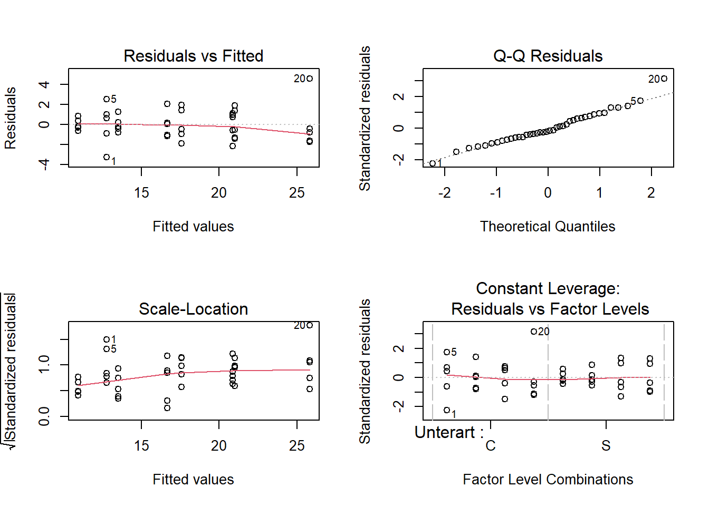
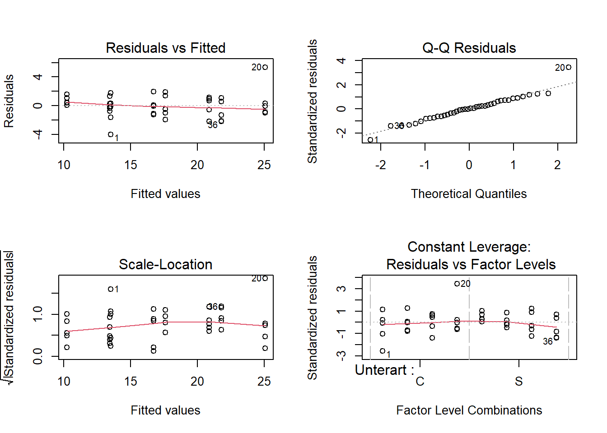

Lesen Sie den Datensatz kormoran.csv ein, Dieser enthält Tauchzeiten (hier ohne Einheit) von Kormoranen in Abhängigkeit von Jahreszeit und Unterart. Unterarten: Phalacrocorax carbo carbo (C) und Phalacrocorax carbo sinensis (S); Jahreszeiten: F = Frühling, S = Sommer, H = Herbst, W = Winter.
Ihre Gesamtaufgabe ist es, aus diesen Daten ein minimal adäquates Modell zu ermitteln, das dies Abhängikeit der Tauchzeit von der Jahreszeit und Unterart beschreibt.
Bitte erklären und begründen Sie die einzelnen Schritte, die Sie unternehmen, um zu diesem Ergebnis zu kommen. Dazu erstellen Sie bitte ein mit Quarto generiertes html-Dokument, in das Sie Schritt für Schritt den verwendeten R-Code, die dazu gehörigen Ausgaben von R, Ihre Interpretation derselben und die sich ergebenden Schlussfolgerungen für das weitere Vorgehen dokumentieren.
Dieser Ablauf sollte insbesondere beinhalten:
Überprüfen der Datenstruktur nach dem Einlesen, welches sind die abhängige(n) und welches die unabängige(n) Variablen, welches statistische Verfahren wenden Sie an?
Explorative Datenanalyse, um ein Eindruck der Daten zu bekommen und zu kontrollieren ob es NAs in den Daten hat
Definition eines vollen Modelles, das nach statistischen Kritierien zum minimal adäquaten Modell reduziert wird
Durchführen der Modelldiagnostik, um zu entscheiden, ob das gewählte Vorgehen korrekt war oder ggf. angepasst werden muss
Generieren aller Zahlen, Statistiken und Tabellen, die für eine wiss. Ergebnisdarstellung benötigt werden
Formulieren Sie abschliessend einen Methoden- und Ergebnisteil (ggf. incl. adäquaten Abbildungen) zu dieser Untersuchung in der Form einer wissenschaftlichen Arbeit (ausformulierte schriftliche Zusammenfassung, mit je einem Absatz von ca. 60-100 Worten, resp. 3-8 Sätzen für den Methoden- und Ergebnisteil). D. h. alle wichtigen Informationen sollten enthalten sein, unnötige Redundanz dagegen vermieden werden.
Zu erstellen sind (1) Ein quarto generiertes pdf-Dokument mit begründetem Lösungsweg (Kombination aus R-Code, R Output und dessen Interpretation) und (2) ausformulierter Methoden- und Ergebnisteil (für eine wiss. Arbeit).
library("readr")# Daten ladenkormoran <-read_delim("datasets/stat/kormoran.csv", delim =";", col_types =cols("Unterart"="f", "Jahreszeit"="f")) # Ueberpruefen, ob Einlesen richtig funktioniert hat und welche Datenstruktur vorliegtstr(kormoran)
Obs Tauchzeit Unterart Jahreszeit
Min. : 1.00 Min. : 9.50 C:20 F:10
1st Qu.:10.75 1st Qu.:13.38 S:20 S:10
Median :20.50 Median :16.75 H:10
Mean :20.50 Mean :17.40 W:10
3rd Qu.:30.25 3rd Qu.:20.77
Max. :40.00 Max. :30.40
Man erkennt, dass es sich um einen Dataframe mit einer metrischen (Tauchzeit) und zwei kategorialen (Unterart, Jahreszeit) Variablen handelt. Die adäquate Analyse (1 metrische Abhängige vs. 2 kategoriale Unabhängige) ist damit eine zweifaktorielle ANOVA. Die Sortierung der Jahreszeiten (default: alphabetisch) ist inhaltlich aber nicht sinnvoll und sollte angepasst werden.
levels(kormoran$Jahreszeit)
[1] "F" "S" "H" "W"
Die Jahreszeit hat schon eine sinnvolle Reihenfolge, da bei read_delim (anders als bei read.delim) die Reihenfolge der factor levels nach der Reihenfolge des Auftretens in den Daten bestimmt wird. Der Code unten zur Anpassung der Reihenfolge is deshalb hier nicht nötig
Da die Transformation keine klare Verbesserung bringt, bleiben wir im Folgenden bei den untransformierten Daten, da diese leichter (direkter) interpretiert werden können. Auch angesichts der sehr gerigen Anzahl an Datenpunkte (5 Tauchgänge pro Art-Jahreszeit-Kombination) sind asymmwetrische Boxplots wenig überraschend. Das Gesamtbild ist noch OK für parametrische Verfahren (Box ziemlich symmetrisch um Median, Whisker etwas asymmetrisch aber nicht kritisch).
# Vollständiges Modell mit Interaktionaov_1 <-aov(Tauchzeit ~ Unterart * Jahreszeit, data = kormoran)summary(aov_1)
# Modellvalidierung mit Diagnostikplotspar(mfrow =c(2, 2))plot(aov_1)

Das volle (maximale) Modell zeigt, dass es keine signifikante Interaktion zwischen Jahreszeit und Unterart gibt. Wir können das Modell also vereinfachen, indem wir die Interaktion herausnehmen (+ statt * in der Modellspezifikation)
# Modellvereinfachungaov_2 <-aov(Tauchzeit ~ Unterart + Jahreszeit, data = kormoran)aov_2
Call:
aov(formula = Tauchzeit ~ Unterart + Jahreszeit, data = kormoran)
Terms:
Unterart Jahreszeit Residuals
Sum of Squares 106.929 756.170 96.001
Deg. of Freedom 1 3 35
Residual standard error: 1.656166
Estimated effects may be unbalanced
Call:
aov(formula = Tauchzeit ~ Unterart + Jahreszeit, data = kormoran)
Residuals:
Min 1Q Median 3Q Max
-3.995 -0.965 0.025 0.970 5.345
Coefficients:
Estimate Std. Error t value Pr(>|t|)
(Intercept) 13.4950 0.5855 23.047 < 2e-16 ***
UnterartS -3.2700 0.5237 -6.244 3.69e-07 ***
JahreszeitS 3.2300 0.7407 4.361 0.000109 ***
JahreszeitH 7.3700 0.7407 9.951 9.65e-12 ***
JahreszeitW 11.5600 0.7407 15.608 < 2e-16 ***
---
Signif. codes: 0 '***' 0.001 '**' 0.01 '*' 0.05 '.' 0.1 ' ' 1
Residual standard error: 1.656 on 35 degrees of freedom
Multiple R-squared: 0.8999, Adjusted R-squared: 0.8885
F-statistic: 78.67 on 4 and 35 DF, p-value: < 2.2e-16
Im so vereinfachten Modell sind alle verbleibenden Terme signifikant, wir sind also beim “minimal adäquaten Modell” angelangt
# Anderer Weg, um zu pruefen, ob man das komplexere Modell mit Interaktion behalten sollanova(aov_1, aov_2)
Analysis of Variance Table
Model 1: Tauchzeit ~ Unterart * Jahreszeit
Model 2: Tauchzeit ~ Unterart + Jahreszeit
Res.Df RSS Df Sum of Sq F Pr(>F)
1 32 84.992
2 35 96.001 -3 -11.009 1.3817 0.2661
# In diesem Fall bekommen wir den gleichen p-Wert wie oben (0.266)# Modelldiagnostikpar(mfrow =c(2, 2)) # alle vier Abbildungen in einem 2 x 2 Rasterplot(aov_2)

influence.measures(aov_2)# kann man sich zusätzlich zum "plot" ansehen, um herauszufinden,# ob es evtl. sehr einflussreiche Werte mit Cook's D von 1 oder grösser gibt
Links oben ist alles bestens, d. h. keine Hinweise auf Varianzheterogenität (“Keil”) oder Nichtlinearität (“Banane”) Rechts oben ganz gut, allerdings weichen Punkte 1 und 20 deutlich von der optimalen Gerade ab -> aus diesem Grund können wir es doch noch mal mit der log10-Transformation versuchen (s.u.) Rechts unten: kein Punkt hat einen problematischen Einfluss (die roten Linien für Cook’s D > 0.5 und > 1 sind noch nicht einmal im Bildausschnitt.
# Alternative mit log10aov_3 <-aov( log10(Tauchzeit) ~ Unterart + Jahreszeit, data = kormoran)aov_3
Call:
aov(formula = log10(Tauchzeit) ~ Unterart + Jahreszeit, data = kormoran)
Terms:
Unterart Jahreszeit Residuals
Sum of Squares 0.0627004 0.4958434 0.0562031
Deg. of Freedom 1 3 35
Residual standard error: 0.04007247
Estimated effects may be unbalanced
Rechts oben: Punkt 20 jetzt auf der Linie, aber Punkt 1 weicht umso deutlicher ab -> keine Verbesserung -> wir bleiben bei den untransformierten Daten. Da wir keine Interaktion zwischen Unterart und Jahreszeit festgestellt haben, brauchen wir auch keinen Interaktionsplot (unnötig kompliziert), statt dessen können wir die Ergebnisse am besten mit zwei getrennten Plots für die beiden Faktoren darstellen. Bitte die Achsenbeschriftungen und den Tukey post-hoc-Test nicht vergessen.